Dompteur & Reproducteur
Sélectionne, élève et prépare les créatures utiles aux royaumes.
Apporte au mondeMontures, lignées et services d'élevage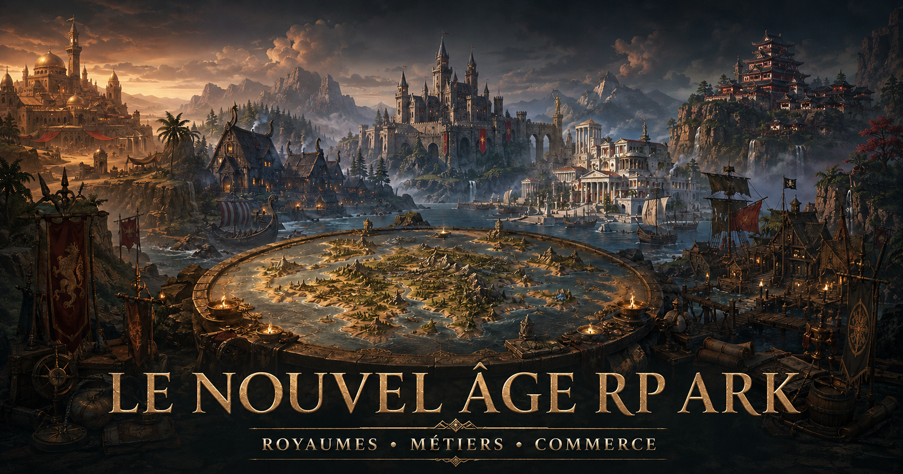
Bienvenue sur Ragnarok
Un univers heroic fantasy post-cataclysmique où six civilisations doivent produire, commercer et écrire ensemble la suite du monde.
Orientation rapide
Tout ce qu’un nouveau joueur doit comprendre avant de créer son personnage.
Comparez les six cultures, leurs valeurs, leurs institutions et leur histoire.
Voir les royaumes →Choix 2Comparez les métiers principaux et secondaires avant de créer votre personnage.
Voir le guide complet →Choix 3Copiez le modèle officiel, respectez les consignes et racontez votre survie au Cataclysme.
Ouvrir le guide RP →Chaque action peut avoir un impact sur le monde. Les alliances, les rivalités et les choix des joueurs façonnent une histoire commune.
Six civilisations
Chaque royaume possède une identité forte, des valeurs et des institutions qui lui sont propres.
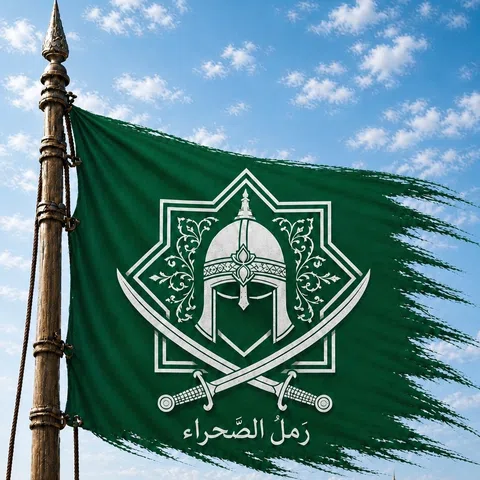
RoyaumeAsharunEmpire ottoman et terres arabiquesUn royaume façonné par le désert, les routes marchandes et l'Esprit des Dunes.
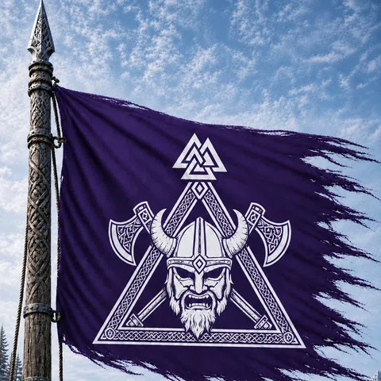
RoyaumeFalkheimPeuples vikings du NordDes communautés nordiques bâties pour résister, explorer et célébrer autour du feu.
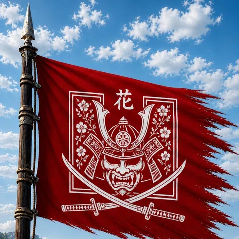
RoyaumeShintaiJapon féodalUn royaume de rizières, de savoir-faire précis et de traditions martiales.
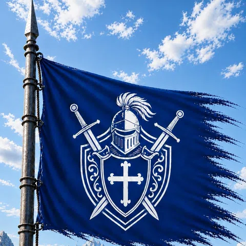
RoyaumeVanloriaChevalerie, forteresses et sermentsL'ordre, la défense et l'artisanat soutiennent les bastions du royaume.
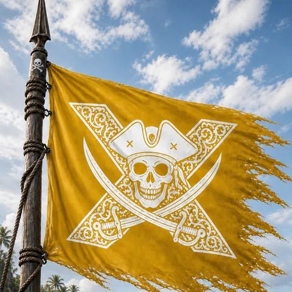
RoyaumeNerethisPirates, marées et trésorsAprès la Dernière Nuit et la perte de leur terre, les survivants cherchent un nouveau rivage.
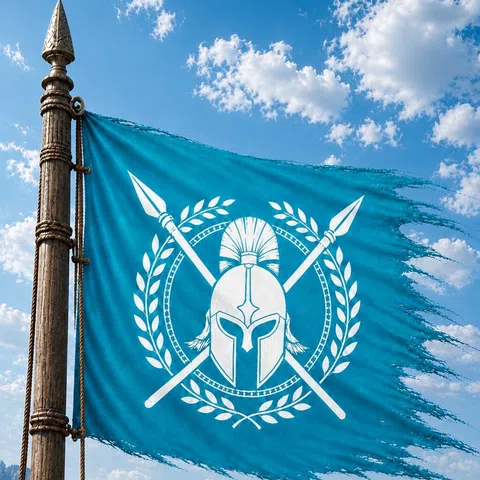
RoyaumeErythrosPeuple grec d'inspiration romaineDes cités antiques où philosophie, agriculture et commerce se rencontrent.
Explorez l’identité des six peuples, puis consultez leurs frontières, leurs ressources uniques et les créatures accessibles à chacun.
Douze professions complémentaires
Les métiers structurent la vie des royaumes et créent de vraies raisons de collaborer.
Sélectionne, élève et prépare les créatures utiles aux royaumes.
Apporte au mondeMontures, lignées et services d'élevageTransforme les métaux et entretient l'équipement de terrain.
Apporte au mondeArmes, outils, protections et réparationsExploite plantes, toxines et trophées de créatures.
Apporte au mondeRemèdes, poudres et préparations raresTravaille le bois pour les ateliers, les tavernes et les foyers.
Apporte au mondeMobilier, contenants et objets d'artisanatConçoit des bâtiments cohérents avec l'identité de chaque cité.
Apporte au mondeHabitations, ateliers et ouvrages collectifsCultive les ressources régionales et nourrit les communautés.
Apporte au mondeRécoltes, transformations, repas et boissonsDécouvrez leurs activités, leurs responsabilités, leurs coopérations et leurs deux illustrations dédiées.
Histoire du monde
Un ancien continent a été anéanti en une seule nuit. Quelques survivants se sont réveillés sur une plage étrangère, au milieu des ruines de peuples effacés et d’une faune venue d’un autre âge.
Le cataclysme est certain. Le conflit des Titans reste une rumeur. Entre les deux se trouve un mystère que les joueurs devront apprendre à comprendre.
Lire l’histoire du mondeDes royaumes prospères ignorèrent les visions sombres des oracles.
En quelques heures, la terre et les océans effacèrent des millénaires d’histoire.
Plages inconnues, ruines anciennes, dinosaures et reconstruction : le cycle recommence.
Six traditions spirituelles
Dieux uniques, panthéons et esprits façonnent les lois, les serments, les fêtes et la vision de l’au-delà.
Aldor
Vasteran
Zahyir
Thyphar
Ryokazen
Ulfgard
Origines, divinités, héros, sanctuaires, prières, fêtes religieuses et visions de l’au-delà.
Le mod Le Nouvel Âge
Consultez les ressources, transformations, consommables et évolutions publiées du mod sans quitter le portail.
Huit boss légendaires
Forces primordiales ou fléaux démoniaques, les demi-dieux règnent sur le feu, la glace, la nature, le temps, les mers et les cauchemars.
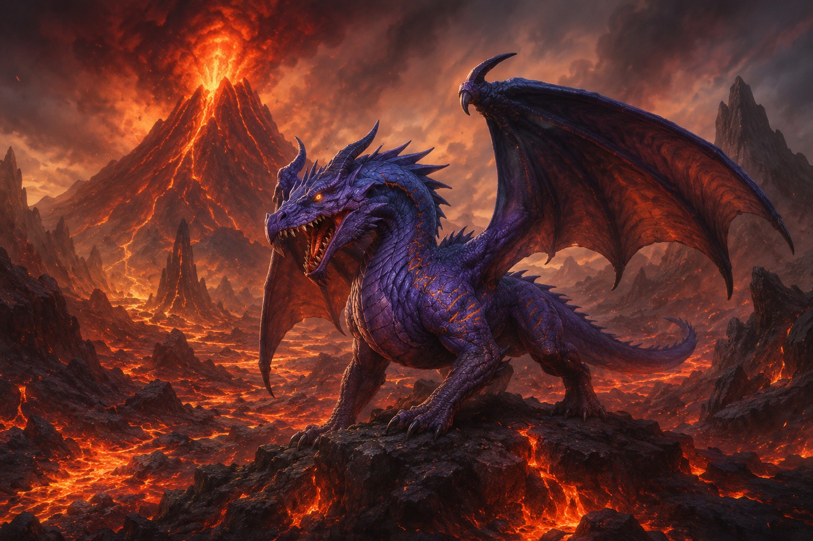
Feu et volcans

Glace et hiver

Nature et équilibre
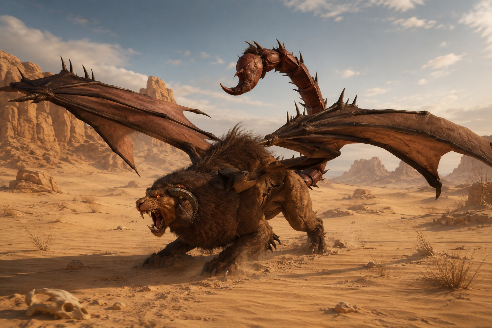
Temps et sable

Mers et abysses
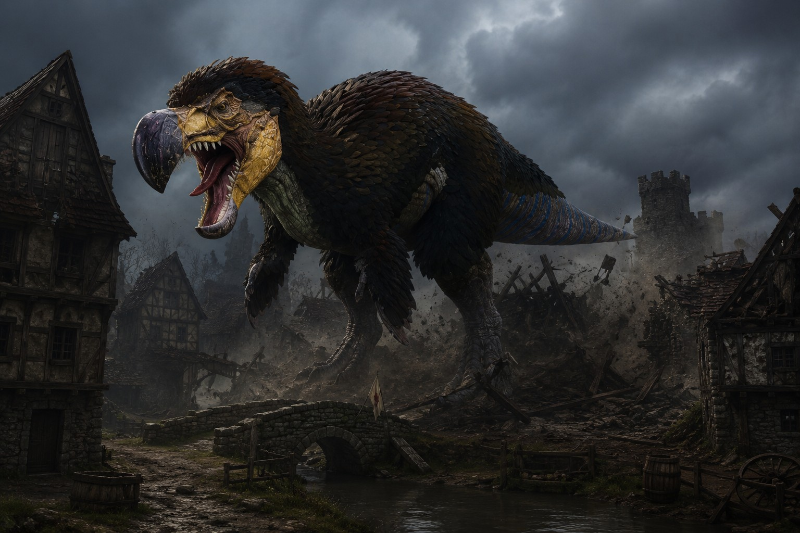
Âmes et destruction
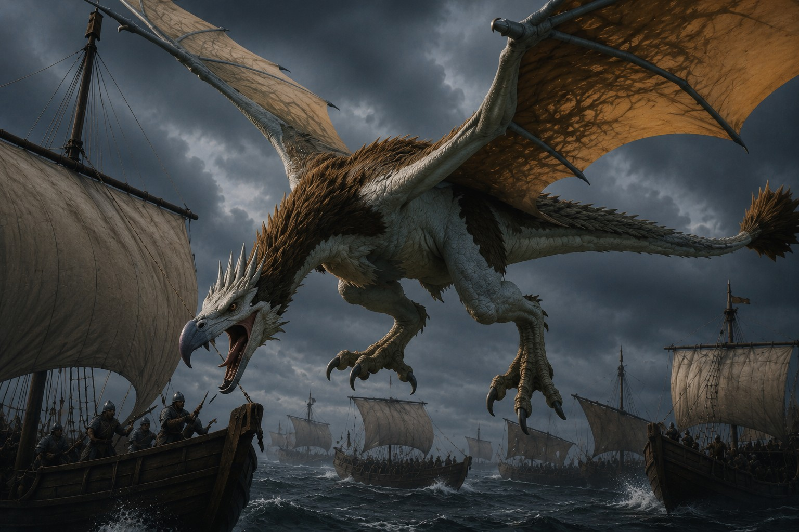
Tempêtes et esprit
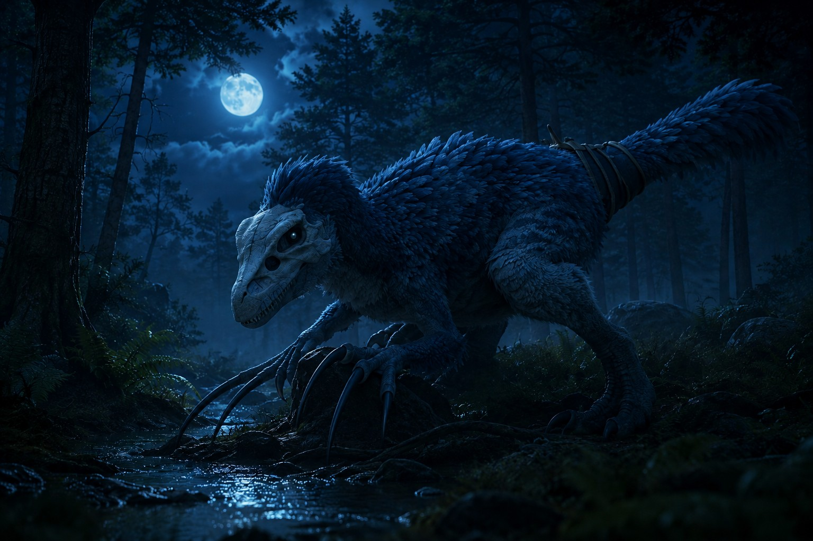
Peur et rêves
Origines, pouvoirs, territoires, prophéties et récits complets des demi-dieux du Nouvel Âge.
Quatorze forces indépendantes
Guides, peuples libres, armées, cultes et menaces anciennes sont incarnés par les PNJ et les animateurs au fil des quêtes et des saisons.
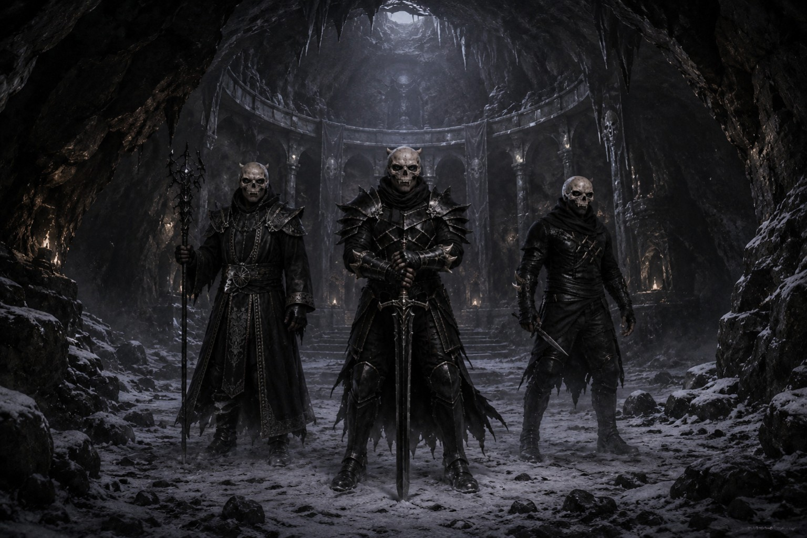
Guides immortels
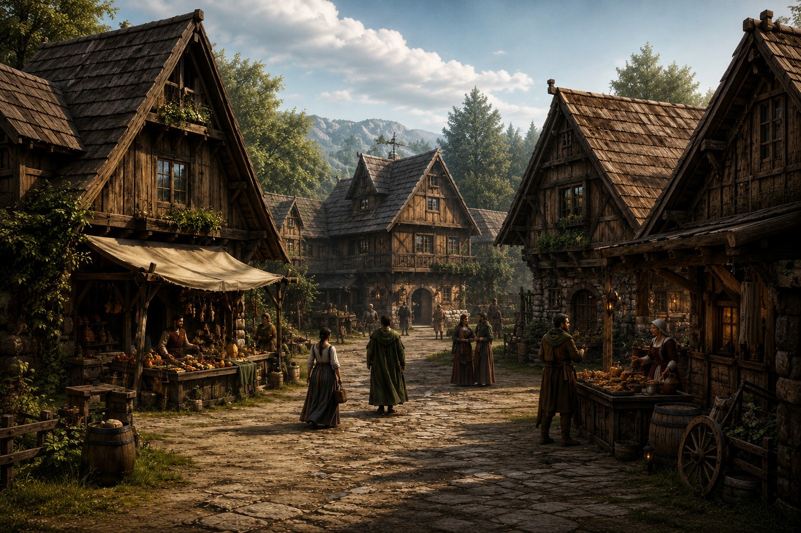
Civilisation survivante
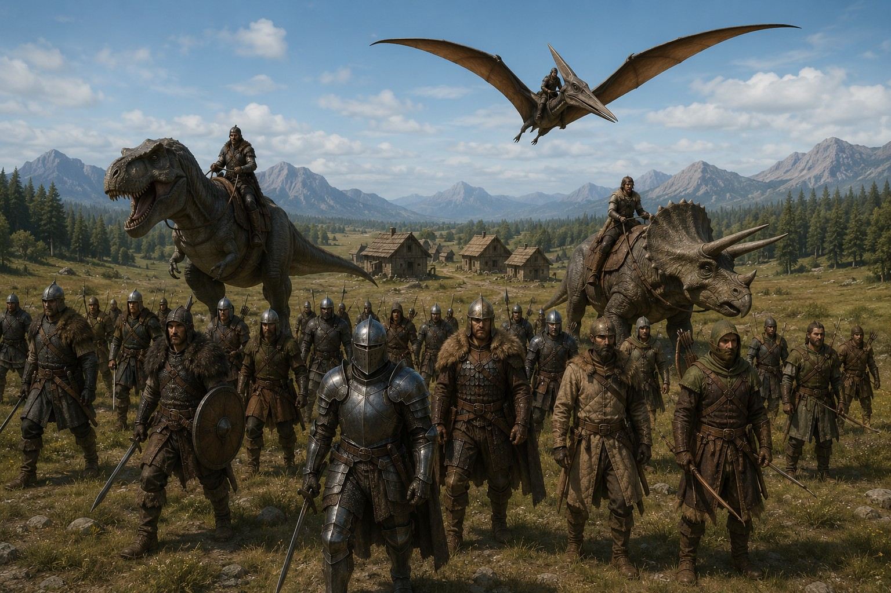
Villages autonomes
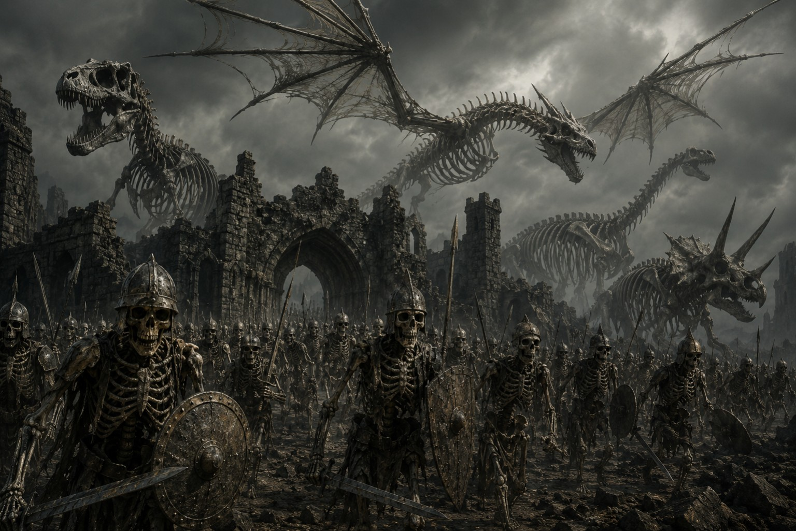
Armée morte-vivante
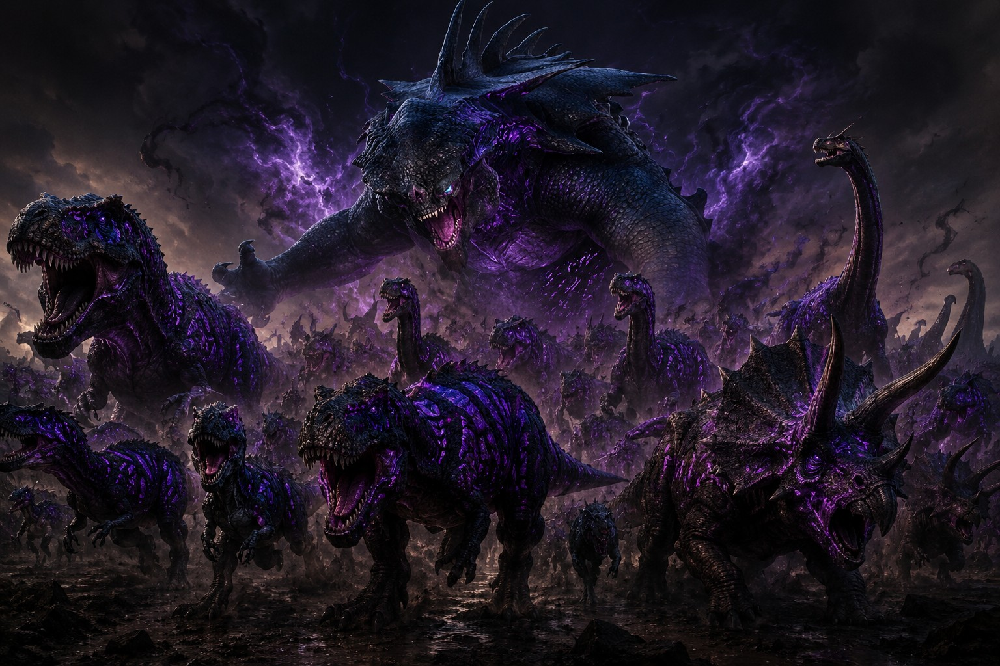
Créatures altérées
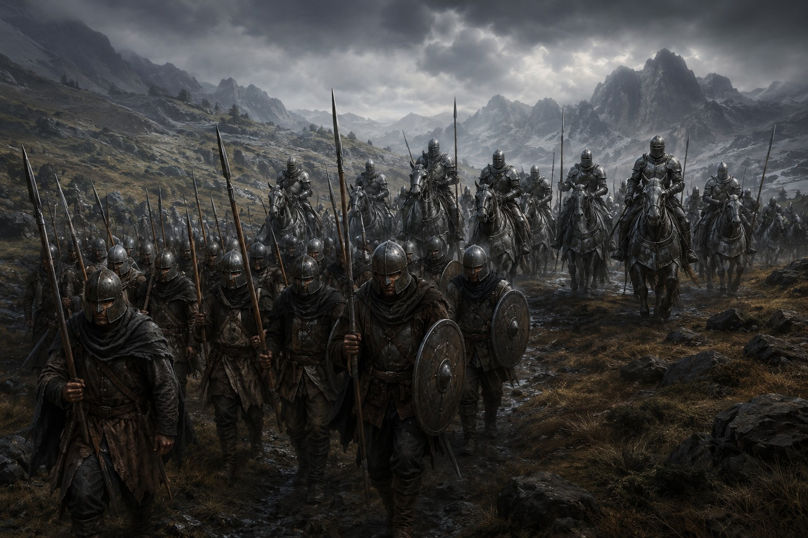
Compagnie mercenaire
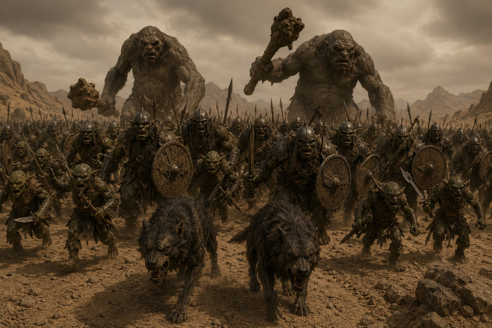
Confédération tribale
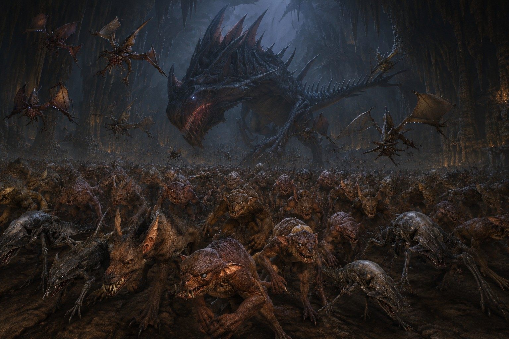
Conscience collective
Découvrez leurs origines, leurs territoires, leurs ambitions et la place qu’elles occupent dans les événements du serveur.
Préparer son arrivée
Deux guides relient maintenant la création de personnage à la configuration qui donne vie au serveur.
Modèle de fiche copiable, règles obligatoires, salons Discord et exemple complet d’un survivant de Vanloria.
Préparer sa fiche RP →48 mods nommésConsultez les noms des mods, classés par grandes catégories selon leur rôle dans l’expérience.
Explorer l’écosystème →Mis en avant · Mod officielStructures, décorations, identité culturelle et mécaniques RP : le lore prend forme directement dans le jeu.
Découvrir le contenu officiel →6 catégories d’activitésQuêtes quotidiennes, chasses à la prime, événements, donjons, saisons et alertes de boss.
Ouvrir le guide des activités →Monde vivantConsultez les survivants connus du Nouveau Monde, leur statut, leur royaume et les liens marquants qui structurent l’histoire du serveur.
Ouvrir le registre →Votre histoire commence ici
Découvrez le règlement complet, présentez votre personnage et préparez votre arrivée sur Ragnarok.